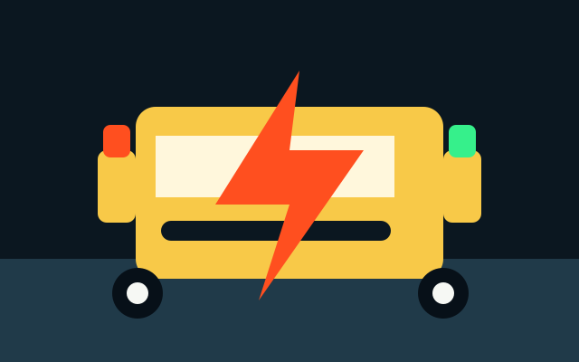

New Battery Sale in Reay Road
New car battery sale support with battery selection guidance, doorstep coordination and replacement help.
View Reay Road pagePIN 400010 Roadside Help
Fast Mechanic helps with new battery sale, battery jump start, towing, petrol delivery, key lock, stepney change and urgent car mechanic calls around Reay Road Station, Darukhana, Cotton Green, Mazgaon.
Central Mumbai
Drivers call Fast Mechanic in Reay Road for industrial routes, port-side turns and station access. The local response focus includes Reay Road Station, Darukhana, Cotton Green, Mazgaon and nearby routes such as Barrister Nath Pai Road, P D'Mello Road.
Use this dedicated page for searches like new battery sale in Reay Road, car mechanic near me in Reay Road, towing service in Reay Road, battery jump start in Reay Road and petrol delivery near Reay Road.

New car battery sale support with battery selection guidance, doorstep coordination and replacement help.
View Reay Road page
Dead battery jump start support for cars stuck at home, office, basement parking or roadside.
View Reay Road page
Towing coordination for cars that cannot be started, moved safely or driven after a breakdown.
View Reay Road pageEmergency fuel help when petrol finishes on Mumbai roads, parking areas or airport routes.
View Reay Road pageCar key lockout guidance when keys are locked inside or the door lock is not responding.
View Reay Road pageSpare wheel change support for flat tyre, puncture and unsafe tyre situations.
View Reay Road page
Roadside and doorstep mechanic checks for starting trouble, overheating, brake alerts and minor faults.
View Reay Road pageOne-number support for jump start, towing, petrol, stepney, lockout and urgent mechanic needs.
View Reay Road pagePopular Reay Road Searches
These are the urgent search scenarios this page is structured to answer clearly.
New car battery sale support with battery selection guidance, doorstep coordination and replacement help. Call +91 70218 10153 with your exact location near Reay Road Station.
Dead battery jump start support for cars stuck at home, office, basement parking or roadside. Call +91 70218 10153 with your exact location near Reay Road Station.
Towing coordination for cars that cannot be started, moved safely or driven after a breakdown. Call +91 70218 10153 with your exact location near Reay Road Station.
Emergency fuel help when petrol finishes on Mumbai roads, parking areas or airport routes. Call +91 70218 10153 with your exact location near Reay Road Station.
Car key lockout guidance when keys are locked inside or the door lock is not responding. Call +91 70218 10153 with your exact location near Reay Road Station.
Spare wheel change support for flat tyre, puncture and unsafe tyre situations. Call +91 70218 10153 with your exact location near Reay Road Station.
Roadside and doorstep mechanic checks for starting trouble, overheating, brake alerts and minor faults. Call +91 70218 10153 with your exact location near Reay Road Station.
One-number support for jump start, towing, petrol, stepney, lockout and urgent mechanic needs. Call +91 70218 10153 with your exact location near Reay Road Station.
Nearby Coverage
Internal area links help Google understand the real local radius and give customers nearby options.
FAQ
Yes. Fast Mechanic provides dead battery jump start support in Reay Road and nearby locations including Reay Road Station, Darukhana, Cotton Green.
Yes. Fast Mechanic provides new battery sale coordination in Reay Road. Call +91 70218 10153 with your car model, battery type if known and exact location.
Yes. If your car cannot be moved safely from Reay Road, call +91 70218 10153 and share the pickup point, drop point and vehicle condition.
Use the Call Now button or dial +91 70218 10153. Share the vehicle model, issue, exact location and nearest landmark in Reay Road.
Call Lead Ready
Call Fast Mechanic now for new battery sale, battery, towing, petrol, key lock, stepney or mechanic support. The fastest call is the direct number below.